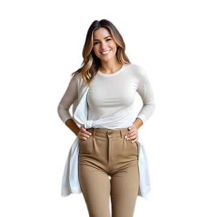
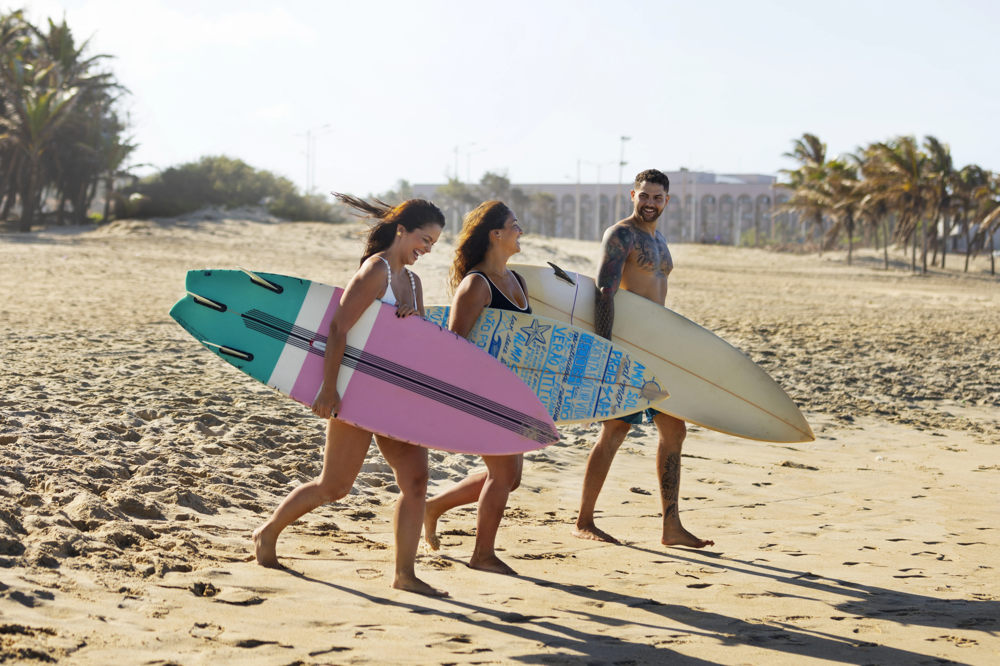
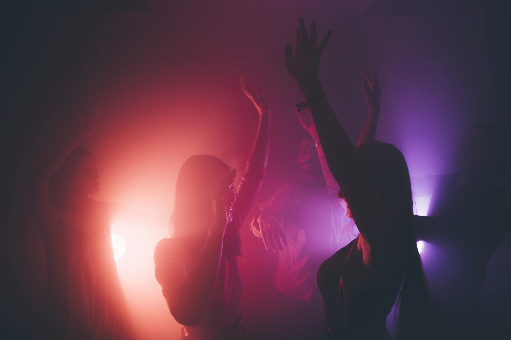

Campanhas Lifestyle 360º
Conceito, roteiro, produção e análise em entregas completas para feeds, reels, stories e eventos.
Portfólio WA Tech
Este layout é totalmente personalizável: incluímos, removemos ou adaptamos seções para que o site reflita a identidade e o posicionamento da sua empresa.
@watechevoce
Crio experiências digitais que geram conexão real. Do feed ao evento, da ideia ao relatório final, cada entrega tem estratégia, estética e conversão.

Cada parceria recebe um plano sob medida. Entrego campanhas autênticas, consultorias inteligentes e experiências que se tornam cases.
Conceito, roteiro, produção e análise em entregas completas para feeds, reels, stories e eventos.
Sessões estratégicas para posicionamento, funil de conteúdo, guidelines visuais e métricas acionáveis.
Viagens, eventos, lançamentos e ativações com narrativa em tempo real e relatórios completos.
Trabalho com relatórios completos, KPIs claros e acompanhamento pós-campanha. O objetivo é transformar ideias em resultados mensuráveis.
Audiência
+320K
Visualizações médias mensais nas principais plataformas
Conversão
2,4x
Média de crescimento em leads após campanhas integradas
Comunidade
70%
Seguidores engajados semanalmente via stories e lives
Campanhas
+40
Projetos entregues com marcas nacionais e internacionais
“A Watechina transformou nosso lançamento em movimento. Da ideação à mensuração, tudo foi impecável — superamos a meta de conversão em 180%.”
Comunidade que confia
Pessoas que acompanham bastidores diários, respondem pesquisas, participam de lançamentos e experimentam produtos junto comigo.
Seleção de conteúdos que mesclam lifestyle, tech e experiências com marcas incríveis.

YouTube
Como construo campanhas multiplataforma com storytelling e dados.

TikTok
Conteúdos rápidos com impacto — tendências e bastidores humanizados.
Narrativas visuais que unem moda, viagem e tecnologia.
Stories, reels e bastidores que mostram Watechina em ação – clique para mergulhar no conteúdo completo.
Compartilhei como produzimos a campanha que apresenta a nova coleção de óculos eco friendly.
Mostrei o setup lean que uso para produzir conteúdo rápido mantendo estética premium.

Abordei bastidores da media kit season e mostrei relatórios de performance ao vivo.
Pessoas que amam lifestyle, inovação e autenticidade. Co-criamos juntos cada lançamento, respondemos feedbacks em tempo real e transformamos conteúdo em movimento cultural.
Uma lista VIP com conteúdos exclusivos, insights de tecnologia aplicada ao lifestyle e campanhas colaborativas.
Entrar na lista VIPEncontros sob medida para influenciadores e marcas que desejam elevar posicionamento, estética e resultados.
Solicitar agendaChegou a hora de conectar sua marca ao lifestyle que inspira, engaja e converte. Conte comigo para criar campanhas com alma e estratégia.